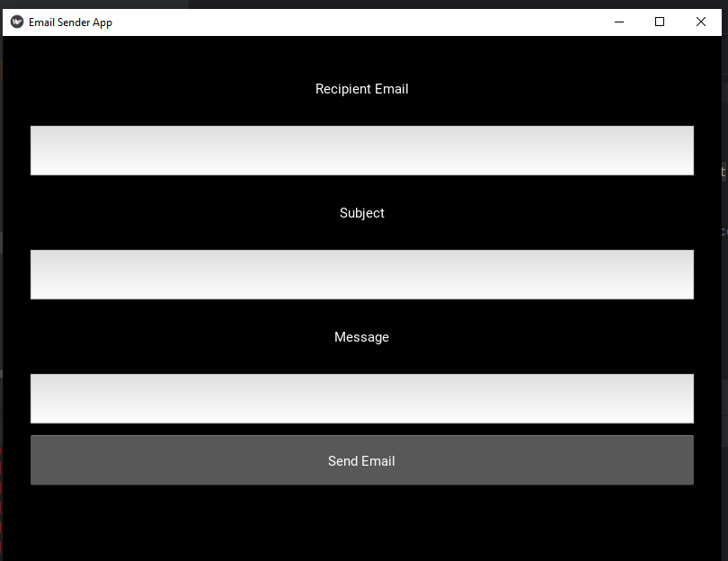
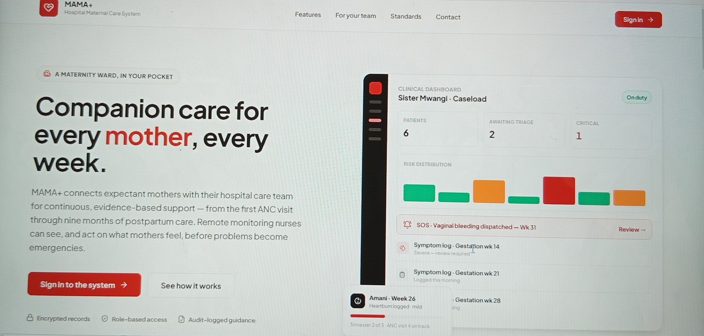

Developed
Inventory Control System
A bool inventory management application that allows users to add, view, update, delete and search for book records through CRUD operations.
View ProjectMY WORK & EXPERIENCE
A collection of academic projects, personal experiments and ideas brought to life through technology. Each project represents an opportunity to learn, create and solve problems.
Developed
A bool inventory management application that allows users to add, view, update, delete and search for book records through CRUD operations.
View Project
Developed
A desktop email application integrating email sending and inbox retrieval. It uses SMTP and IMAP, TLS encryption, app-password authentication and HTML email parsing.
View Project
Paused
A partially developed desktop application intended to support IT ticket and token management. Development is expected to resume.
View Project
In Development
An AI-enhanced maternal care companion designed to support pregnant women and healthcare workers through accessible information and improved continuity of care.